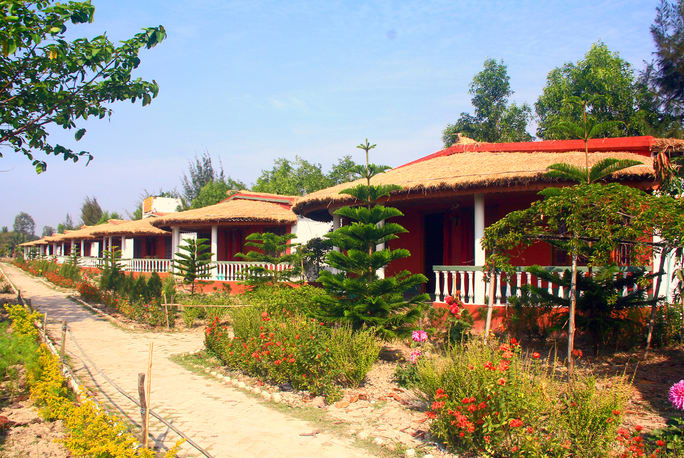
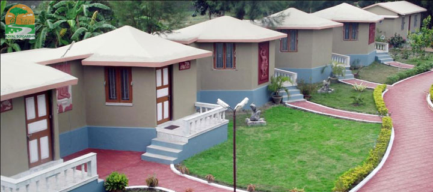
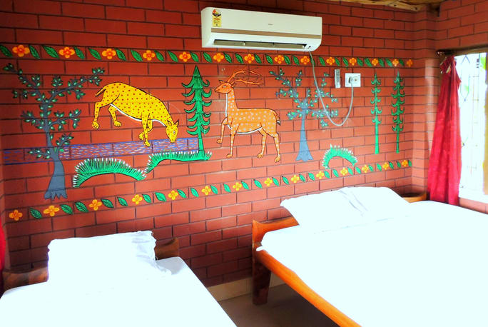
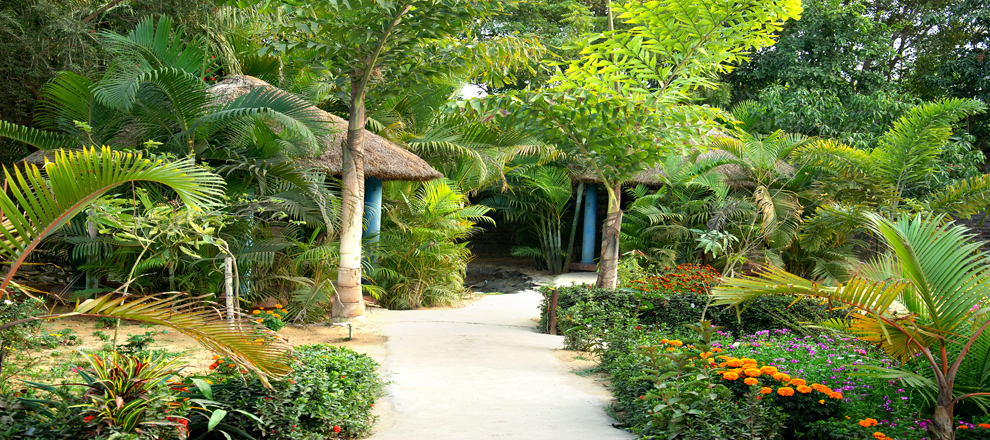

Barsa Resorts Sundarban
Barsa Resort is a socially and environmentally responsible nice resort located on a river in
southern Bangladesh just few distances from the famous Sundarban mangrove forest. Barsa Resort
started their journey with a view to provide fully serviced tour packages for local and foreign
tourists promoting the nature, people, culture and heritage of Bangladesh more presentably.
It has got worldwide connection with sophisticated state of the art network and earned a good
reputation in handling both inbound & outbound tourists with all satisfaction & trust.
It’s door is open to provide an unparalleled level of customer satisfaction through flexible,
timely, efficient and pleasant service for you.
Barsa Resorts has a team of professionals who are in this tourism trade from last many years.
They all are very Enthusiastic, Energetic and willing to give a different vision of travel to all our
tourists to experience the best and go for the best. It’sphilosophy is based on a simple concept to deliver
the highest level of customer services with the best possible price.

Royal Sundarban
Royal Sunderban Wild Resort in Jharkhali Island in the best location closest to
the forest core area to spend an ideal tine amidst nature for a couple of days.
It has cottages for accommodation with the most modern amenities with 35 guests.
The balconies in the cottage allow a clear view of the water body and the garden.
The Royal Sunderban Wild Resort is an unique destination just beside a large sweet
water lake which is the home for migratory birds during winter months.
Tourists can reach Sunderbans on fixed departure dates or any day as per the choice of tourists.
The Sunderbans support one of the largest populations of Royal Bengal Tiger.
These man-eaters who have often been the harbingers of death in these parts also at
the same time give the place its fundamental character of existence. However recent years have witnessed
sharp decline in their numbers. In August 2004 there were in total approximately 256 individuals in Sunderban
which in the current year (2013) have been estimated to be only 103. The predominant reasons behind this drastic
downfall are poachers and an acute scarcity of food. However recently another significant reason behind this decline
has been brought to notice by the research conducted by scientists at the Cardiff University, UK. According to them
the absence of enough genetic variation among tigers is the real culprit.

Sundarban Gateway Resort
Sundarban Gateway Resort in Sunderban is a perfect vacation getaway.
t is located located in Gulki village besides Pakahralaya and Gulki-P.O Gosaba.
Chill, relax and have a fun-filled time at this resort.
It offers you a pleasant stay along with facilities like restaurant, breakfast, parking, laundry,
backup generator and medical help. Experience the wildlife in Sunderban and make your trip more adventurous.
The rooms offer you all the comfort and luxury. Unwind in the arms of nature and have an enjoyable trip.

SUNDARBAN RESORT
A distinctive art deco building with large palatial rooms and plush antique furnishings
situated amidst lush green surroundings reminiscent of the style & splendor of the bygone
royal heritage of the Maharajas.A meditation hotel, ideally located adjacent to the Osho
Commune International.Multiplexes like Gold Cinema, PVR are close to Sunderban Resort & Spa with
Fast Food Chains at a walking distance.